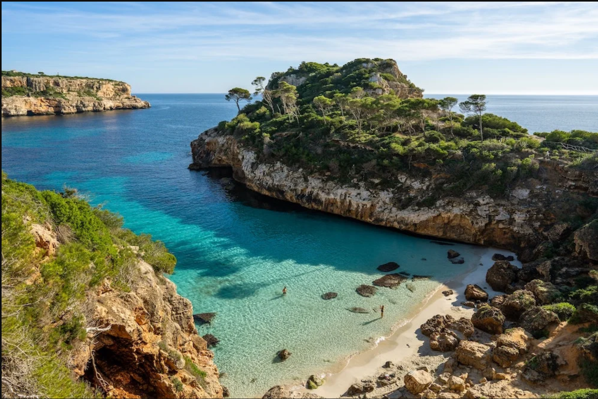

Forslag til Feriesteder!!
Hellas
Hellas er kjent for sine vakre strender, god mat og bra vær! pris:17999 for en person. reisen inneholder opphold hos et 5 stjerners hotell all inclusive med en strand rett ved siden av og masse basseng og dette er en svert attraktiv reise.

Mallorca
Mallorca er den perfekte destinasjonen for deg som ønsker sol, vakre strender og krystallklart hav. Øya byr på en unik kombinasjon av avslappende ferie og spennende opplevelser. Her finner du sjarmerende landsbyer, fantastisk natur og flotte turmuligheter i Tramuntana-fjellene. Det lokale kjøkkenet frister med fersk sjømat og ekte middelhavssmaker. Mallorca passer like godt for familier som for par og vennegjenger. Med sitt behagelige klima og varierte tilbud er dette et reisemål du sent vil glemme.

Gran Canaria
 Gran Canaria er et fantastisk reisemål for deg som ønsker sol året rundt, flotte strender og et behagelig klima. Øya byr på stor variasjon, fra gyldne sanddyner i Maspalomas til grønne fjell og sjarmerende landsbyer. Her kan du kombinere avslapning med spennende aktiviteter som fotturer, vannsport og shopping. Det lokale kjøkkenet tilbyr smakfulle retter med både spanske og kanariske tradisjoner. Gran Canaria passer perfekt for både familier, par og vennegrupper. Med sitt mangfold og stabile klima er dette en ferie du virkelig kan nyte.
Gran Canaria er et fantastisk reisemål for deg som ønsker sol året rundt, flotte strender og et behagelig klima. Øya byr på stor variasjon, fra gyldne sanddyner i Maspalomas til grønne fjell og sjarmerende landsbyer. Her kan du kombinere avslapning med spennende aktiviteter som fotturer, vannsport og shopping. Det lokale kjøkkenet tilbyr smakfulle retter med både spanske og kanariske tradisjoner. Gran Canaria passer perfekt for både familier, par og vennegrupper. Med sitt mangfold og stabile klima er dette en ferie du virkelig kan nyte.